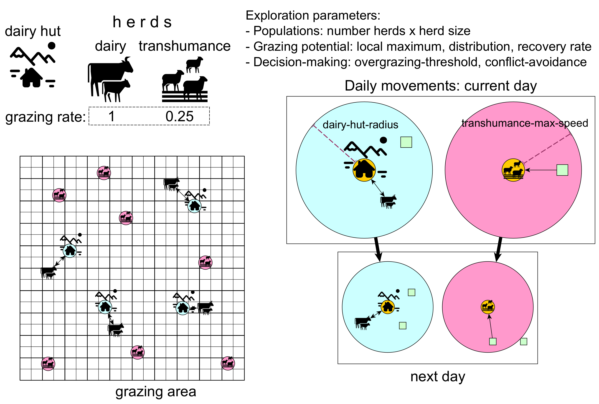

| source | information | model | domain |
|---|---|---|---|
| Carrer, Walsh, Mocci 2020 | Dairy-focused cow herders (marghé)herders (bergé) | Dairy herdsherds | Agent |
| Carrer, Walsh, Mocci 2020 | Summer(gias) | Grazing season (days)area (grid of land units) | Global |
| The amount and quality of pasture varies within the area | Land units have specific a maximum grazing potential | Land unit | |
| Pasture is consumed by herd animals | Herd animals decrease the grazing potential of land units | Land unit | |
| Grazing requirements vary depending on animal species (body size)require more than sheep (~4:1) | Grazing depends on a grazing rate, which is larger in dairy than in transhumance herds(dairy: 1 vs transhumance: 0.25) | Global | |
| After grazed, pasture fully recovers in one or two years time | Grazing potential recovery rate | Global | |
| Carrer, Walsh, Mocci 2020 | Dry-stone huts (casòt)areas not far from water sourcesintermittently | Dairy huts (agents/objects)with higher grazing potential (preferential use for dairy)surrounded by insufficient potential are abandoned (to be reoccupied later) | Agent |
1 Introduction
1.1 Motivation
The motivation for modelling the long-term interaction between transhumance and dairy pastoralism in the Western Alps stems from observing changes in pastoral practices and their impact on the landscape over centuries. In areas like Val Maudagna and the Faravel plateau, traditional dairy-focused practices (involving fixed, dry-stone structures for cheese production) have gradually shifted to transhumance strategies, often due to economic pressures such as the decline in wool prices and shifts in market demands. This shift led to the abandonment of dairy structures as herders adapted to new practices, favouring mobile or temporary solutions. Modelling these interactions helps trace the socio-economic and environmental factors driving these transitions and provides insights into how upland areas were managed and altered over time.
1.2 Model overview

Hypotheses / questions to be explored:
Under which conditions can both populations co-exist?
Under which condition(s) does one of the population outcompete the other?
Are there cycles of growth and reduction of land use by each activity?
What are the parameters determinant for populations to co-exist over the long term?
Are there characteristic trends in the number and occupation of dairy huts? >Can the structures associated with dairy huts be interpreted as “archaeological markers” of the land use distribution and intensity related to dairy pastoralism.
Do we observe trends in total grazing potential? How does the vegetation cover behave under different regimes of dairy and transhumance pastoralism?
1.2.1 Environment
The model represents an area where pastoral land use takes place seasonally as a rectangular grid (width x height), with each pixel equivalent to a patch of pasture. Each pixel has a given carrying capacity (i.e., grazing potential), which varies according to grazing (decrease) and a given recovery rate (increase), through which it recovers towards its maximum carrying capacity (i.e. the local maximum of grazing potential). A pixel can also host the construction of a shelter for dairy herds (a dairy hut), which stays there, used or abandoned, for the rest of the simulation.
1.2.2 Agents
There are two populations of herds: dairy herds and transhumant herds (e.g., in the Alps, cow and sheep herds, respectively). All herds have the following properties and behavioural rules:
Number of individual animals does not vary, assuming it is given by herd management.
Grazing potential required per day, which is assumed to be a function of headcount and a constant metabolic rate per capita.
Whether it reached a point where the required grazing potential cannot be met at the best available location found without overgrazing, i.e. without overstepping a threshold of sustainable grazing land use (
overgrazing-threshold). When one herd flags an unsustainable state, the simulation will stop at the end of the day.
However, the two types of herds are differentiated by their behavioural rules:
Dairy herds: At the beginning of a grazing season, the herd will choose the best available location for a new dairy hut (i.e. the one offering the most grazing potential within a catchment radius or simply return to the hut used in the last season, if still sustainable. Every day during the grazing season, it will graze the best patch within a given distance from the dairy hut (
dairy-hut-radius), reducing th grazing potential by its daily requirement.Transhumant herds: At the beginning of the grazing season, the herd will enter the area through the best unoccupied patch on the edges. Each day during the grazing season, the herd moves to the best available patch within a radius determined by a maximum movement speed (
transhumance-max-speed) and grazes it, reducing the grazing potential by its daily requirement.
1.3 Details
1.3.1 Inputs: constants and parameters
Grazing area conditions:
area-width,area-height[integer,patches]: Dimensions of the seasonal grazing area.length-of-grazing-season[integer, days]: Number of days per grazing season.grazing-potential-max-recovery-rate[float, grazing potential units]: Maximum rate of (re)growth of grazing potential. NOTE: growth is modelled with a logistic equation where the maximum is given asgrazing-potential_localMax.grazing-potential_max[float, grazing potential units]: Maximum value ofgrazing-potential_localMax. NOTE: this patch variable is sampled from a uniform distribition U(0,grazing-potential_max].
Herd population:
number-herds-dairy,number-herds-transhumance[integer,turtles]: Number of herds focused on dairy or transhumance.herd-size-dairy,herd-size-transhumance[integer, grazing animals]: Number of animals (i.e., head count) per herd focused on dairy or transhumance.
Herd grazing behaviour:
grazing-rate-dairy,grazing-rate-transhumance[float, grazing potential units]: Rate of degradation (consumption + losses) of grazing potential per animal of a herd focused on dairy or transhumance. As typically proportional to animal body mass,grazing-rate-dairy > grazing-rate-transhumanceassuming dairy involves bovids, and transhumance, ovicaprids.overgrazing-threshold[float, grazing potential units]: Estimation of a minimal grazing potential per patch, under which it is considered “over grazed” and thus “inadequate” or “unsustainable” for further grazing land use.dairy-hut-radius[float,patch-width]: Maximum distance moved per day by animals in dairy herds from their hut.transhumance-max-speed[float,patch-width]: Maximum distance moved per day by animals in transhumance herds from their current position.conflict-avoidance[Boolean]: Whether transhumance herds avoid to graze within the reach of dairy huts.
Simulation control:
record_initial-lag[integer, seasons]: Number of seasons after the start of simulations not added to the record, to avoid the strong bias of initial conditions when evaluating equilibrium.record_sample-frequency[integer, seasons]: Number of seasons after which a state record is taken.record_equilibrium-threshold[float, standard deviation units]: Deviation from the mean of a measurement record, under which the assumption of stable equilibrium is accepted.
1.3.2 Auxiliar global variables
Time tracking:
season[integer, seasons]: Number of grazing seasons passed.day[integer, days]: Number of days passed in the current grazing season.
Calculated directly from input and kept constant:
patch-count: Total number of patches in the grazing area.population-size-dairy,population-size-transhumance[integer, grazing animals]: The total number of animals related to each type of pastoralism. These are not true inputs since they are calculated directly from the above asnumber-herds * herd-size.dairy-pressure-coef,transhumance-pressure-coef[float, ?]:
Intermediate measurements:
total-grazing-potential_localMax[float, grazing potential units]: Sum of allgrazing-potential_localMax, used to calculatedairy-pressure-coef,transhumance-pressure-coef.record_total-grazing-potential,record_grazing-land-use[float, grazing potential units]: Record oftotal-grazing-potentialandgrazing-land-useused to identify asymptotic approach to equilibrium and stop simulation.
1.3.3 Outputs: measurements and aggregate indicators
Grazing potential and land use:
total-grazing-potential[float, % of total maximum grazing potential]: Percentage of the total maximum grazing potential currently available.grazing-land-use[float, % of total number of patches]: Percentage of patches that have been grazed up to the current day during the current season.grazing-land-use_dairy,grazing-land-use_transhumance[float, % of total number of grazed patches]: Percentage of patches grazed up to the current day during the current season that were used by one or another type.
Sustainability:
unsustainable-state[Boolean]:unsustainable-dairy-herds,unsustainable-transhumance-herds[float, % of number of herds of type]:
Archaeological proxies:
dairy-hut-count:total-occupation-layers: